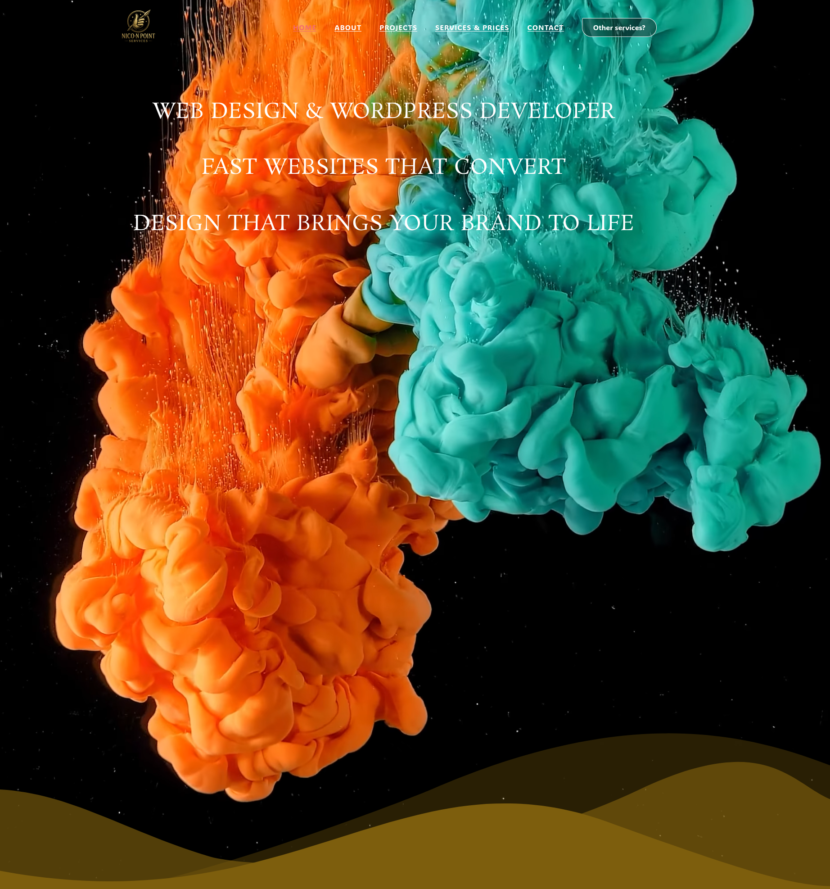

Webdesign dat past bij jouw doelen en je merk echt laat leven.
Naast mijn technische en facilitaire diensten bied ik ook professioneel webdesign voor kleine bedrijven en zelfstandigen.
Veel ondernemers hebben een goede website nodig, maar willen geen ingewikkeld proces of hoge kosten. Daarom help ik met het ontwerpen van duidelijke, snelle en moderne websites die goed werken op computer, tablet en mobiel.
Voor mijn webdesignprojecten gebruik ik een aparte website waar je meer informatie, voorbeelden en mogelijkheden kunt bekijken.
Bekijk mijn webdesignwebsite:
https://nico-on-point-webdesign.com/
Ik help onder andere met:
Door mijn achtergrond als multi-skill technician en IT-specialist kijk ik niet alleen naar het ontwerp van een website, maar ook naar de technische kant.
Dat betekent:
Mijn webdesigndiensten zijn vooral geschikt voor:
